In this tutorial we will use Waymark to create a Route.
You will be guided through navigating to the Map Editor, drawing a Route on the Map and adding a Description for that Route.
This tutorial assumes you have a WordPress site (self-hosted) and have created your first Map. Follow the Creating Your First Map tutorial to learn how to create a Map.
This Map illustrates the end result. Try clicking on the Line to view the Description.
Click on any screenshot to enlarge.
1. Open the Map Editor
In this step we are going to open the Map Editor.
When logged in to WordPress admin, you can either open the Map Editor whilst viewing a Map on the front-end, or by selecting it from the Waymark > Maps admin screen.
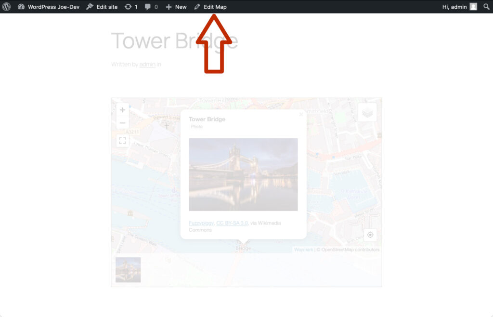
If you are viewing your published Map, click “Edit Map” to open the Editor.
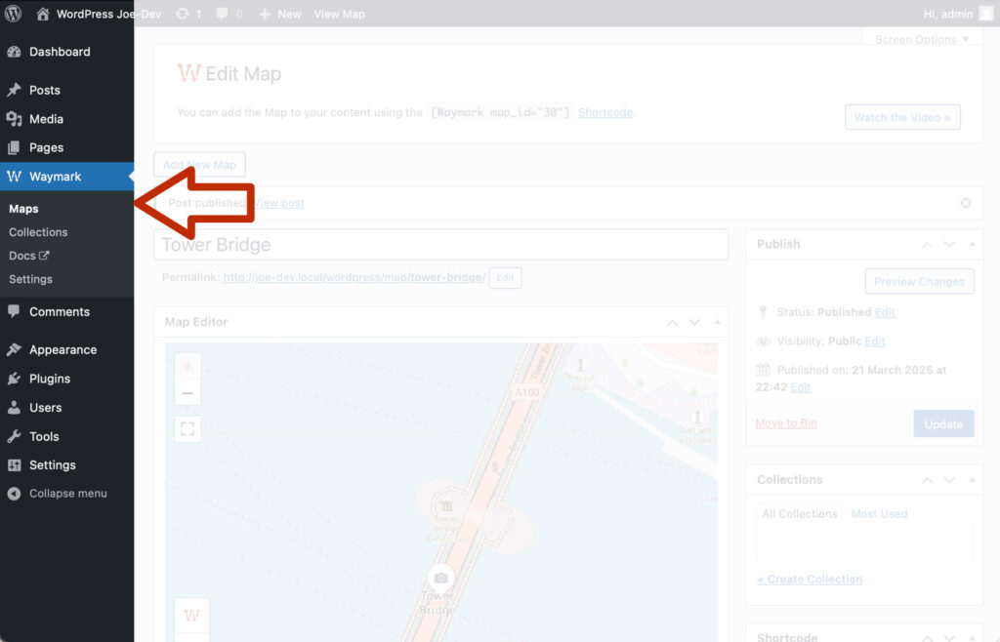
From admin, click the “Waymark > Maps” admin menu link to view a list of all of your Maps.
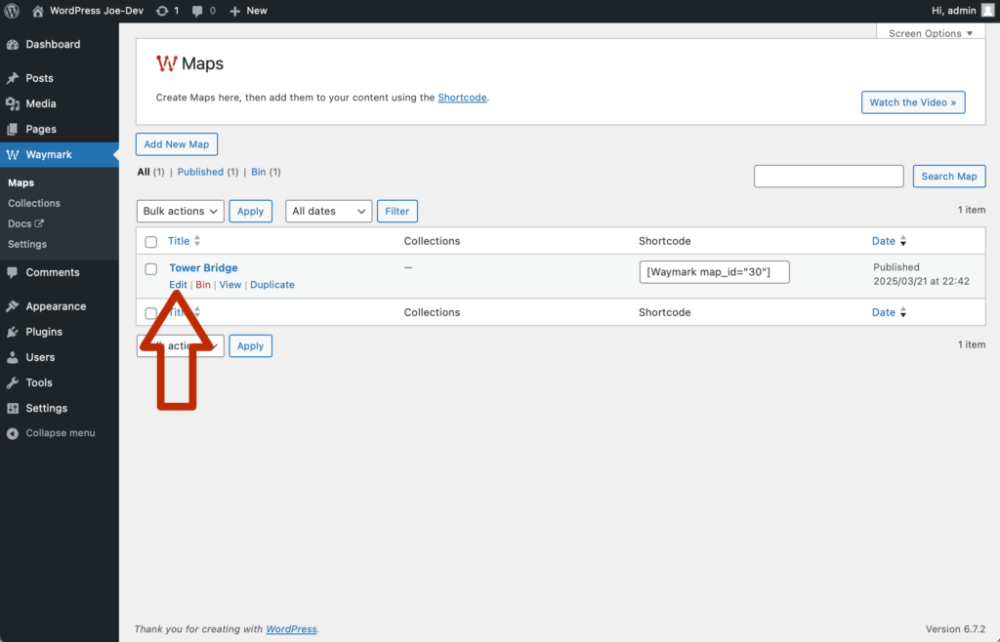
Click the Map title to open the Editor.
2. Select the Line tool
Now we are going to select the Line tool from the toolbar.
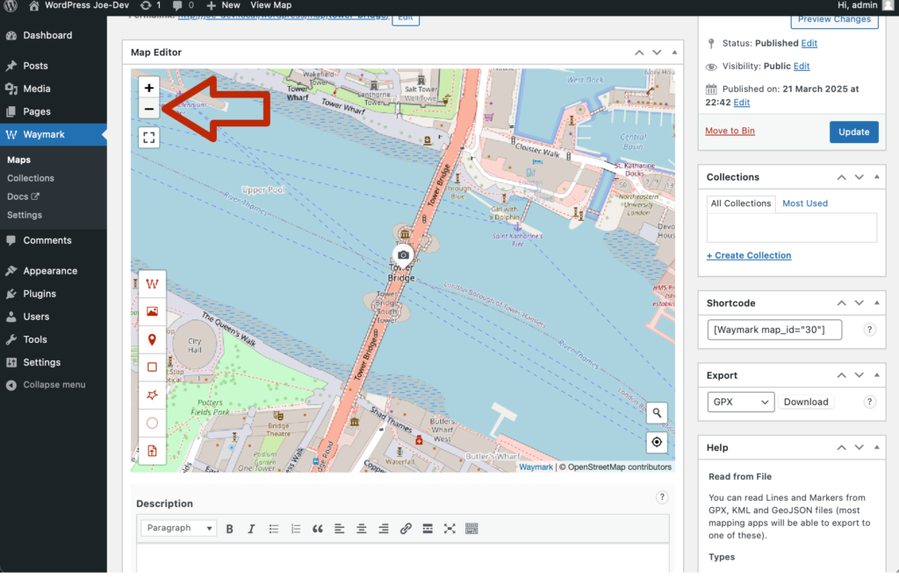
Scroll down to view the Map. Click on the top-left minus symbol “-” to zoom out. Do this until you can view both sides of the river.
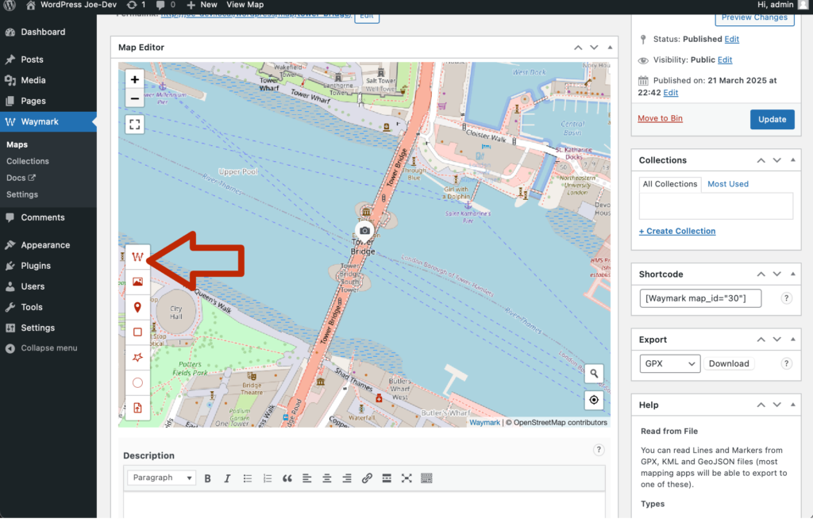
Next, click on the Line tool, which is the first button on the Editor toolbar. With the Line tool activated, the cursor should now look like cross-hairs.
3. Creating a Line
Now we can draw a Line by clicking on the Map.
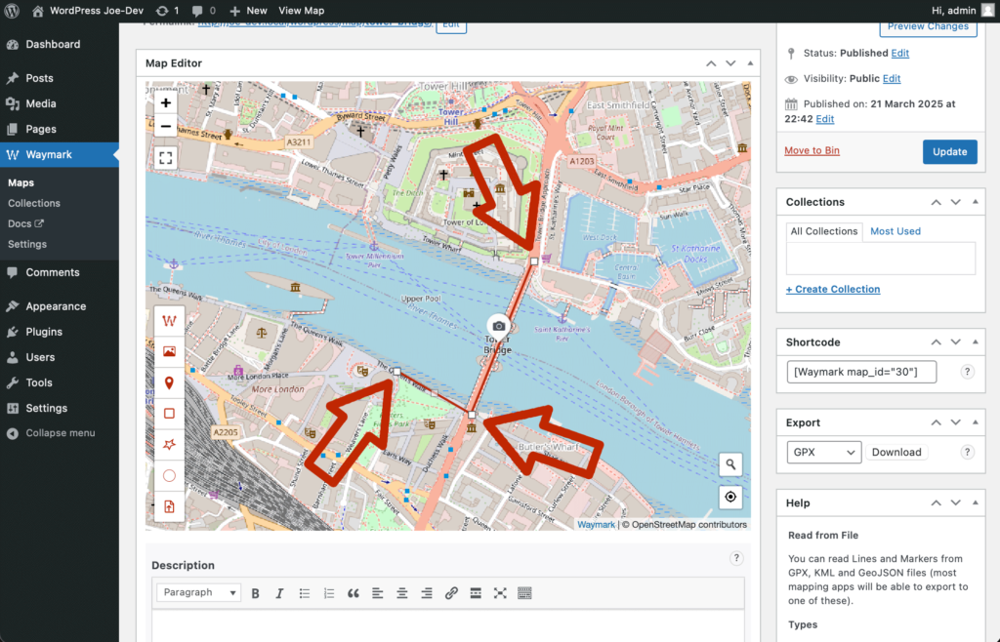
Each click on the Map will add to the current Line, with each point appearing as a small white box. First, click on the South side of the river to start the Line. Next, click on the road going over the bridge, then to the North side of the river.
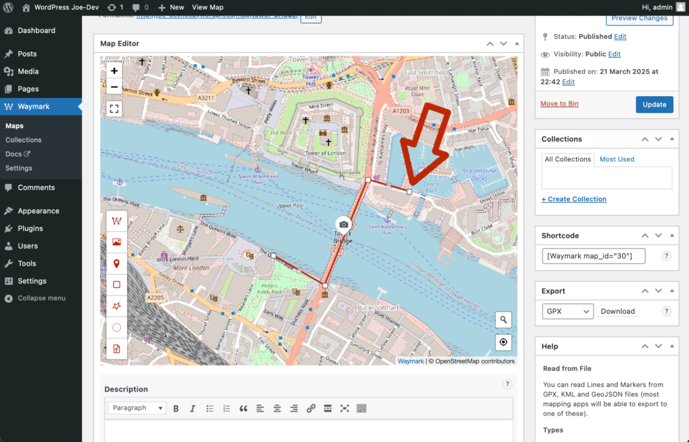
Finally, extend the Line to the East. Now, click the last point added (white box) to complete the Line.
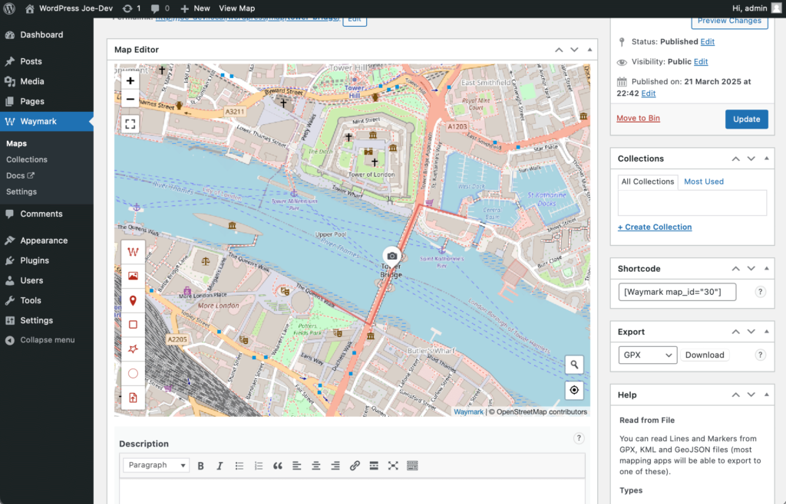
Once the Line has been completed, the small white boxes will be removed and the cursor will return to a hand – indicating that the Line tool is no longer active.
4. Adding a Description
We can add information about the Line in the Overlay editor popup.
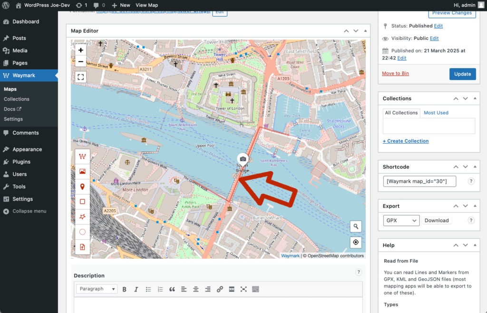
Hover over the Line you just created, your cursor will turn from a hand into a pointing hand. Click the Line to open the Overlay editor popup.
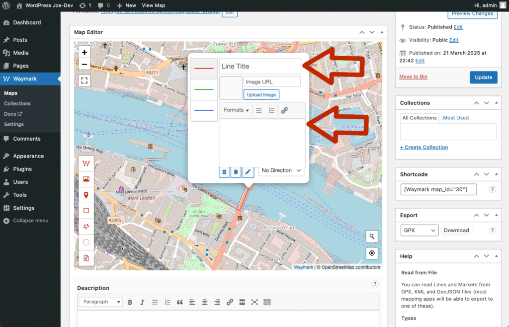
Provide a title and description for the Line by entering them into the appropriate text fields.
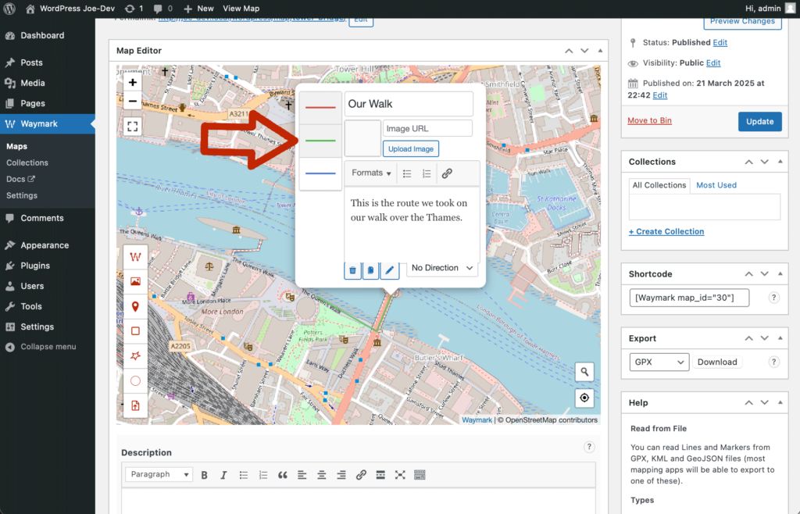
Click on the green line to the left of the popup to change the Line colour to green.
5. Updating and Viewing the Map
It’s time to view our changes on the front-end.
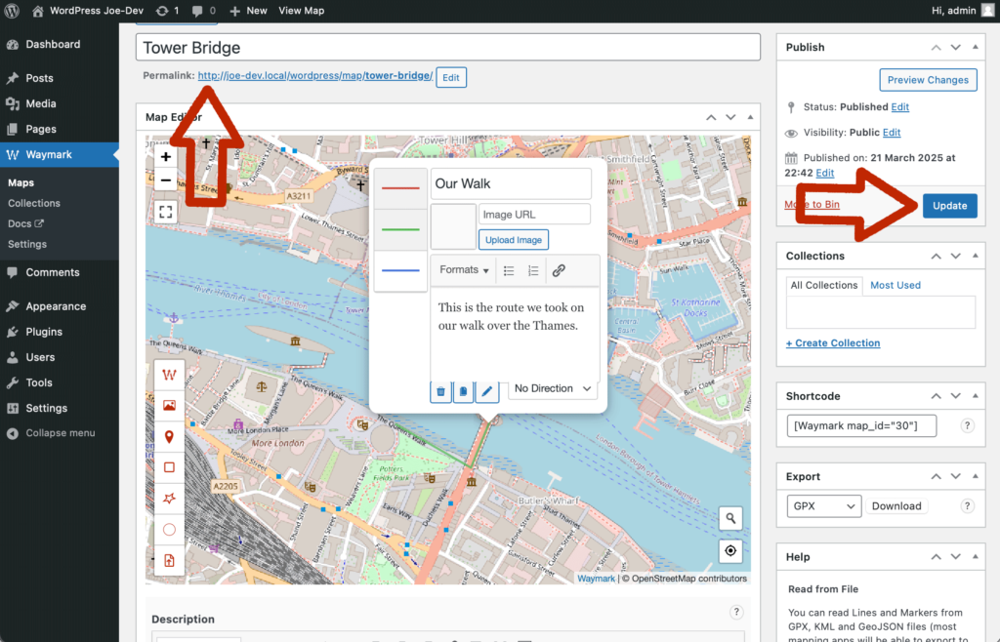
Click on the “Update” button to the right of the screen to save the Map. Next, click on the permalink to view the Map.
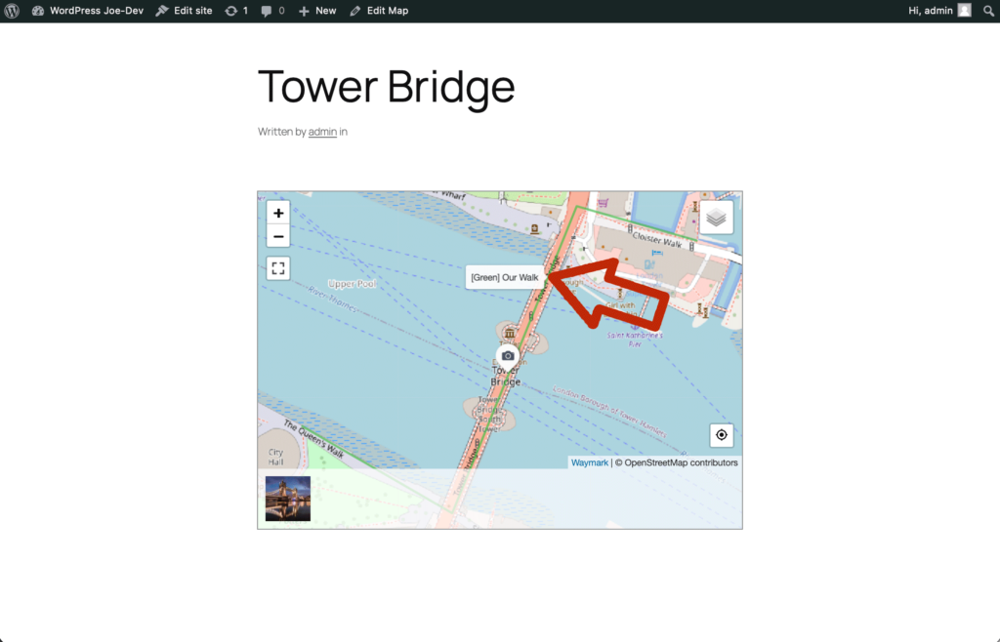
From the front-end of your site, hover over the Line to see it’s Title.
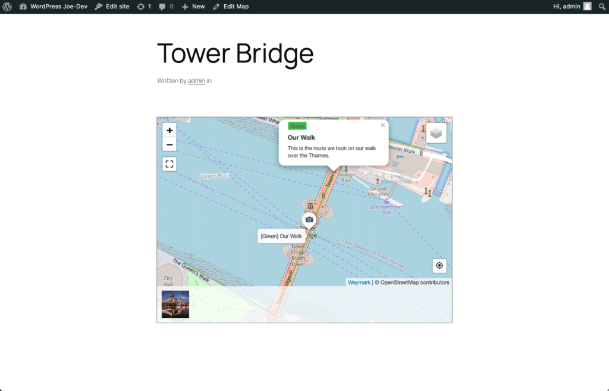
Whilst still hovering over the Line, click it to view the Line title and description in a popup.